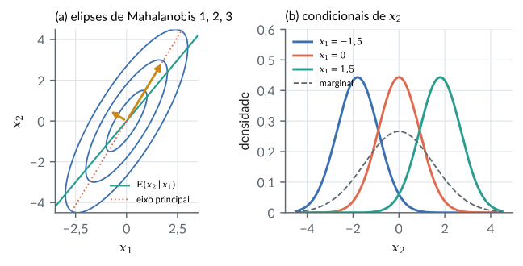
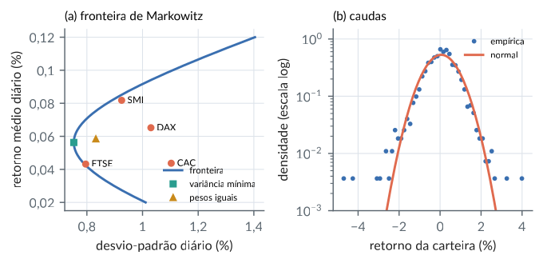
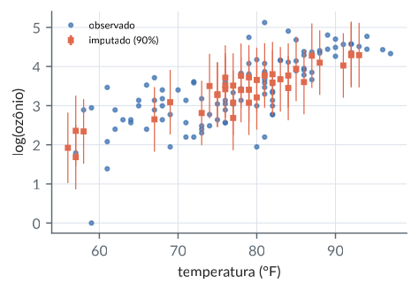
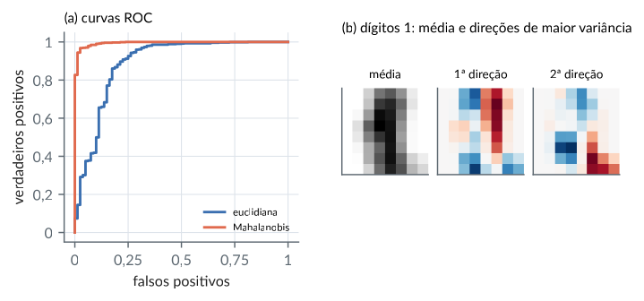
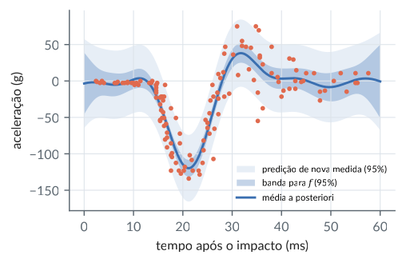
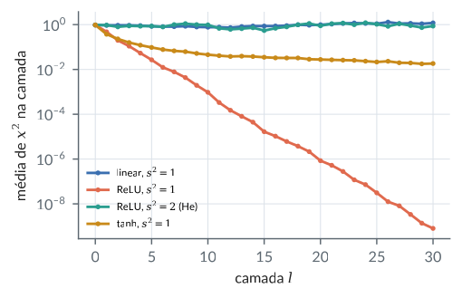
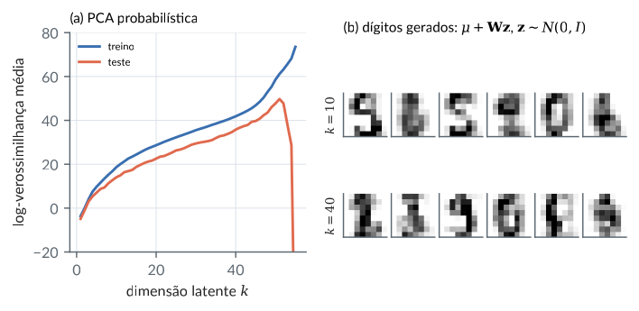
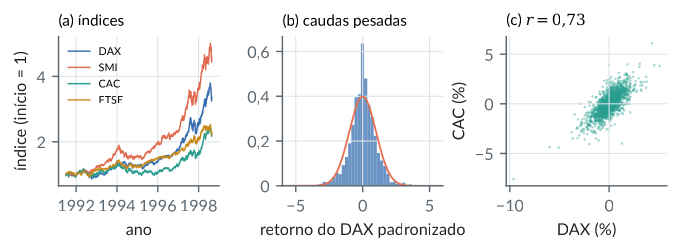
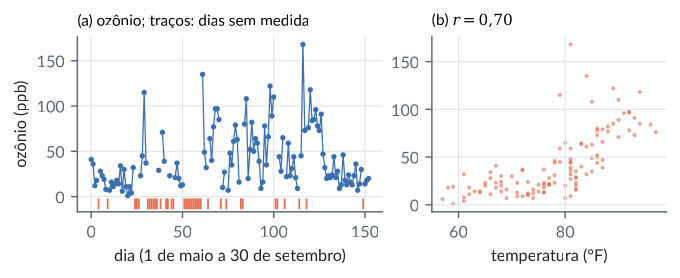

9. Vetores aleatórios e a distribuição normal multivariada
Material reprodutível do Capítulo 9 do livro.
Exemplos
Momentos: Var(Ax), viés de A/n e E(x’Ax)
R/cap09/01_momentos.R
# Cap. 9: Momentos: Var(Ax), viés de A/n e E(x'Ax)
source(file.path("R", "comum", "gerador.R")) # sorteios do Python
mu <- c(1, 2, 0)
Sigma <- matrix(c(4, 2, 1, 2, 3, -1, 1, -1, 2), 3)
L <- t(chol(Sigma)) # Sigma = L L'
A <- matrix(c(1, 1, 0, 0, 1, -1), 2, byrow = TRUE)
A %*% Sigma %*% t(A) # Var(Ax) = A Sigma A'
# 20 000 amostras de tamanho n = 5 (normais, via x = mu + L z)
g <- gerador(9); R <- 20000; n <- 5
soma_S <- matrix(0, 3, 3); soma_q <- 0; B <- diag(c(1, 2, 3))
for (r in 1:R) {
Z <- matriz_normal(g, n, 3) # linhas: z_i'
X <- sweep(Z %*% t(L), 2, mu, "+") # linhas: x_i' = (mu + L z_i)'
A_r <- crossprod(sweep(X, 2, colMeans(X)))
soma_S <- soma_S + A_r / n # estimador de MV: A / n
soma_q <- soma_q + sum((X %*% B) * X) / n # média de x_i' B x_i
}
round(soma_S / R, 3) # perto de (n - 1)/n Sigma
(n - 1) / n * Sigma
c(simulado = soma_q / R,
teorico = sum(diag(B %*% Sigma)) + drop(t(mu) %*% B %*% mu))Saída
[,1] [,2]
[1,] 11 5
[2,] 5 7
[,1] [,2] [,3]
[1,] 3.216 1.605 0.807
[2,] 1.605 2.398 -0.797
[3,] 0.807 -0.797 1.605
[,1] [,2] [,3]
[1,] 3.2 1.6 0.8
[2,] 1.6 2.4 -0.8
[3,] 0.8 -0.8 1.6
simulado teorico
25.02859 25.00000python/cap09/01_momentos.py
"""Cap. 9: Momentos: Var(Ax), viés de A/n e E(x'Ax)."""
import sys
from pathlib import Path
import numpy as np
sys.path.insert(0, str(Path(__file__).resolve().parents[1]))
from comum.gerador import Gerador # noqa: E402
mu = np.array([1.0, 2, 0])
Sigma = np.array([[4.0, 2, 1], [2, 3, -1], [1, -1, 2]])
L = np.linalg.cholesky(Sigma) # Sigma = L L'
A = np.array([[1.0, 1, 0], [0, 1, -1]])
print(A @ Sigma @ A.T) # Var(Ax) = A Sigma A'
# 20 000 amostras de tamanho n = 5 (normais, via x = mu + L z)
g = Gerador(9); R, n = 20000, 5
soma_S = np.zeros((3, 3)); soma_q = 0.0; B = np.diag([1.0, 2, 3])
for r in range(R):
X = g.matriz_normal(n, 3) @ L.T + mu # linhas: x_i'
Xc = X - X.mean(0)
soma_S += Xc.T @ Xc / n # estimador de MV: A / n
soma_q += np.sum((X @ B) * X) / n # média de x_i' B x_i
print((soma_S / R).round(3)) # perto de (n - 1)/n Sigma
print((n - 1) / n * Sigma)
print("simulado:", soma_q / R,
" teórico:", np.trace(B @ Sigma) + mu @ B @ mu)Saída
[[11. 5.]
[ 5. 7.]]
[[ 3.216 1.605 0.807]
[ 1.605 2.398 -0.797]
[ 0.807 -0.797 1.605]]
[[ 3.2 1.6 0.8]
[ 1.6 2.4 -0.8]
[ 0.8 -0.8 1.6]]
simulado: 25.02858750891618 teórico: 25.0Normal multivariada: densidade, condicionais, singular
R/cap09/02_normal.R
# Cap. 9: Normal multivariada: densidade, condicionais, singular
source(file.path("R", "comum", "gerador.R")) # sorteios do Python
mu <- c(1, 2, 0)
Sigma <- matrix(c(4, 2, 1, 2, 3, -1, 1, -1, 2), 3)
L <- t(chol(Sigma))
# Log-densidade pela Cholesky: z = L^{-1}(x - mu),
# log det(Sigma) = 2 sum log L_ii
logdens <- function(x) {
z <- forwardsolve(L, x - mu)
-0.5 * (3 * log(2 * pi) + sum(z^2)) - sum(log(diag(L)))
}
x0 <- c(2, 1, 1)
c(cholesky = logdens(x0),
formula = -0.5 * (3 * log(2 * pi) + log(det(Sigma)) +
drop(t(x0 - mu) %*% solve(Sigma, x0 - mu))))
# Condicional de x1 dado (x2, x3) = (3, -1): complemento de Schur
i1 <- 1; i2 <- 2:3; x2 <- c(3, -1)
B <- Sigma[i1, i2] %*% solve(Sigma[i2, i2])
c(media = mu[i1] + drop(B %*% (x2 - mu[i2])),
variancia = Sigma[i1, i1] - drop(B %*% Sigma[i2, i1]))
# Simulação: 100 000 vetores; regressão de x1 em (x2, x3)
g <- gerador(11); N <- 1e5
X <- sweep(matriz_normal(g, N, 3) %*% t(L), 2, mu, "+")
round(c(colMeans(X), cov(X)[upper.tri(Sigma, TRUE)]), 3)
ajuste <- lm(X[, 1] ~ X[, 2] + X[, 3])
round(c(coef(ajuste), var_resid = var(resid(ajuste))), 3)
round(c(B = B), 3)
# Distância de Mahalanobis: d2 = z'z ~ qui-quadrado com 3 gl
d2 <- colSums(forwardsolve(L, t(X) - mu)^2)
c(media = mean(d2), quantil95 = unname(quantile(d2, 0.95)),
qchisq95 = qchisq(0.95, 3))
# Normal singular: x = (z1, z2, z1 + z2), no plano x1 + x2 = x3
S2 <- matrix(c(1, 0, 1, 0, 1, 1, 1, 1, 2), 3)
e <- eigen(S2); round(e$values, 12)
round(e$vectors[, 3], 4) # base de N(Sigma)
# Não correlacionadas mas dependentes: Y = S X, S = +-1 ao acaso
xs <- g$normal(N); s <- ifelse(g$unif(N) < 0.5, -1, 1); ys <- s * xs
c(correlacao = cor(xs, ys), cor_quadrados = cor(xs^2, ys^2))Saída
cholesky formula
-4.361535 -4.361535
media variancia
1 1
[1] 1.003 2.008 -0.008 4.005 1.995 2.985 1.010 -0.997 2.010
(Intercept) X[, 2] X[, 3] var_resid
-1.001 1.002 1.000 0.996
B1 B2
1 1
media quantil95 qchisq95
2.997551 7.823924 7.814728
[1] 3 1 0
[1] -0.5774 -0.5774 0.5774
correlacao cor_quadrados
0.003766242 1.000000000python/cap09/02_normal.py
"""Cap. 9: Normal multivariada: densidade, condicionais."""
import sys
from pathlib import Path
import numpy as np
from scipy.linalg import solve_triangular
from scipy.stats import chi2
sys.path.insert(0, str(Path(__file__).resolve().parents[1]))
from comum.gerador import Gerador # noqa: E402
mu = np.array([1.0, 2, 0])
Sigma = np.array([[4.0, 2, 1], [2, 3, -1], [1, -1, 2]])
L = np.linalg.cholesky(Sigma)
def logdens(x):
"""Pela Cholesky: z = L^{-1}(x - mu), log det = 2 sum log L_ii."""
z = solve_triangular(L, x - mu, lower=True)
return -0.5 * (3 * np.log(2 * np.pi) + z @ z) \
- np.log(np.diag(L)).sum()
x0 = np.array([2.0, 1, 1])
d = x0 - mu
print("cholesky:", logdens(x0), " fórmula:",
-0.5 * (3 * np.log(2 * np.pi) + np.log(np.linalg.det(Sigma))
+ d @ np.linalg.solve(Sigma, d)))
# Condicional de x1 dado (x2, x3) = (3, -1): complemento de Schur
i1, i2, x2 = 0, [1, 2], np.array([3.0, -1])
B = Sigma[i1, i2] @ np.linalg.inv(Sigma[np.ix_(i2, i2)])
print("média:", mu[i1] + B @ (x2 - mu[i2]),
" variância:", Sigma[i1, i1] - B @ Sigma[i2, i1])
# Simulação: 100 000 vetores; regressão de x1 em (x2, x3)
g = Gerador(11); N = 100_000
X = g.matriz_normal(N, 3) @ L.T + mu
C = np.cov(X.T)
print(np.r_[X.mean(0), C[np.tril_indices(3)]].round(3))
Z = np.column_stack([np.ones(N), X[:, 1:]])
coef, *_ = np.linalg.lstsq(Z, X[:, 0], rcond=None)
res = X[:, 0] - Z @ coef
print("coeficientes:", coef.round(3), " var. resid.:",
round(res.var(ddof=1), 3), " B:", B.round(3))
# Distância de Mahalanobis: d2 = z'z ~ qui-quadrado com 3 gl
d2 = (solve_triangular(L, (X - mu).T, lower=True) ** 2).sum(0)
print("média:", d2.mean().round(4), " quantil 95%:",
np.quantile(d2, 0.95).round(4),
" qui2:", chi2.ppf(0.95, 3).round(4))
# Normal singular: x = (z1, z2, z1 + z2), no plano x1 + x2 = x3
S2 = np.array([[1.0, 0, 1], [0, 1, 1], [1, 1, 2]])
lam, V = np.linalg.eigh(S2)
print(lam[::-1].round(12), V[:, 0].round(4)) # base de N(Sigma)
# Não correlacionadas mas dependentes: Y = S X, S = +-1 ao acaso
xs = g.normal(N); s = np.where(g.unif(N) < 0.5, -1, 1); ys = s * xs
print("correlação:", np.corrcoef(xs, ys)[0, 1].round(4),
" corr. dos quadrados:", np.corrcoef(xs**2, ys**2)[0, 1])Saída
cholesky: -4.361534555831068 fórmula: -4.361534555831068
média: 0.9999999999999999 variância: 1.0
[ 1.003 2.008 -0.008 4.005 1.995 2.985 1.01 -0.997 2.01 ]
coeficientes: [-1.001 1.002 1. ] var. resid.: 0.996 B: [1. 1.]
média: 2.9976 quantil 95%: 7.8239 qui2: 7.8147
[3. 1. 0.] [-0.5774 -0.5774 0.5774]
correlação: 0.0038 corr. dos quadrados: 0.9999999999999999Figura: normal bivariada
python/cap09/fig_cap09.py
def fig_normal_bivariada():
S = np.array([[1.0, 0.8], [0.8, 1.0]]) * np.array([[1.0], [1.5]]) * np.array([1.0, 1.5])
lam, V = np.linalg.eigh(S)
g = np.linspace(-4.5, 4.5, 300); G1, G2 = np.meshgrid(g, g)
P = np.stack([G1, G2], -1); Si = np.linalg.inv(S)
d2 = np.einsum("...i,ij,...j->...", P, Si, P)
fig, (a1, a2) = plt.subplots(1, 2, figsize=(LARG, 2.6))
a1.contour(G1, G2, d2, levels=[1, 4, 9], colors=[CATEG[0]], linewidths=1)
for k in (1, 0):
v = 2 * V[:, k] * np.sqrt(lam[k]) * np.sign(V[1, k])
a1.annotate("", xy=v, xytext=(0, 0), arrowprops=dict(arrowstyle="-|>", color=CATEG[3], lw=1.6))
b = S[1, 0] / S[0, 0]
a1.plot(g, b * g, color=CATEG[2], lw=1.2, label=r"$\mathrm{E}(x_2\mid x_1)$")
a1.plot(g, V[1, 1] / V[0, 1] * g, ":", color=CATEG[1], lw=1, label="eixo principal")
a1.set_xlim(-3.5, 3.5); a1.set_ylim(-4.5, 4.5); a1.set_aspect("equal")
a1.set_xlabel("$x_1$"); a1.set_ylabel("$x_2$"); a1.legend(fontsize=6.3, loc="lower right")
a1.set_title("(a) elipses de Mahalanobis 1, 2, 3", fontsize=8.5, loc="left")
sc = np.sqrt(S[1, 1] - S[1, 0] ** 2 / S[0, 0])
for k, x1 in enumerate((-1.5, 0.0, 1.5)):
dens = norm.pdf(g, b * x1, sc)
a2.plot(g, dens, color=CATEG[k], label=f"$x_1={x1:g}$".replace(".", "{,}"))
a2.plot(g, norm.pdf(g, 0, np.sqrt(S[1, 1])), "--", color=COR["cinza"], lw=1, label="marginal")
a2.set_xlabel("$x_2$"); a2.set_ylabel("densidade"); a2.legend(fontsize=6.3, loc="upper left")
a2.set_ylim(0, 0.6)
a2.set_title("(b) condicionais de $x_2$", fontsize=8.5, loc="left"); virgula(a2)
virgula(a1)
fig.tight_layout(); salvar(fig, CAP, "normal_bivariada")Trecho de python/cap09/fig_cap09.py, que traz também as importações e o estilo.

Melhor preditor linear, precisão e correlações parciais
R/cap09/03_precisao.R
# Cap. 9: Melhor preditor linear, precisão e correlações parciais
w <- read.csv(file.path("dados", "wage1.csv"))
D <- data.frame(lsal = log(w$wage), educ = w$educ, exper = w$exper,
perman = w$tenure)
S <- cov(D); m <- colMeans(D)
# Melhor preditor linear de lsal: b = S_xx^{-1} S_xy (= MQ)
b <- solve(S[-1, -1], S[-1, 1])
rbind(momentos = c(m[1] - sum(b * m[-1]), b),
mq = coef(lm(lsal ~ educ + exper + perman, data = D)))
c(R2 = drop(S[1, -1] %*% b) / S[1, 1],
R2_lm = summary(lm(lsal ~ ., data = D))$r.squared)
# Correlações parciais por K = S^{-1}: -k_ij / sqrt(k_ii k_jj)
K <- solve(S)
P <- -K / sqrt(diag(K) %o% diag(K)); diag(P) <- 1
round(cor(D), 3)
round(P, 3)
# Conferência: resíduos de lsal e educ após (exper, perman)
r1 <- resid(lm(lsal ~ exper + perman, data = D))
r2 <- resid(lm(educ ~ exper + perman, data = D))
cor(r1, r2)Saída
lsal educ exper perman
momentos 0.2843596 0.09202899 0.004121109 0.02206722
mq 0.2843596 0.09202899 0.004121109 0.02206722
R2 R2_lm
0.3160133 0.3160133
lsal educ exper perman
lsal 1.000 0.431 0.111 0.326
educ 0.431 1.000 -0.300 -0.056
exper 0.111 -0.300 1.000 0.499
perman 0.326 -0.056 0.499 1.000
lsal educ exper perman
lsal 1.000 0.482 0.104 0.298
educ 0.482 1.000 -0.324 -0.049
exper 0.104 -0.324 1.000 0.450
perman 0.298 -0.049 0.450 1.000
[1] 0.4816012python/cap09/03_precisao.py
"""Cap. 9: Melhor preditor linear e correlações parciais."""
from pathlib import Path
import numpy as np
import pandas as pd
raiz = Path(__file__).resolve().parents[2]
w = pd.read_csv(raiz / "dados" / "wage1.csv")
D = pd.DataFrame({"lsal": np.log(w["wage"]), "educ": w["educ"],
"exper": w["exper"], "perman": w["tenure"]})
S = D.cov().to_numpy(); m = D.mean().to_numpy()
# Melhor preditor linear de lsal: b = S_xx^{-1} S_xy (= coef. de MQ)
b = np.linalg.solve(S[1:, 1:], S[1:, 0])
Z = np.column_stack([np.ones(len(D)), D.iloc[:, 1:]])
mq, *_ = np.linalg.lstsq(Z, D["lsal"], rcond=None)
print("momentos:", np.r_[m[0] - b @ m[1:], b].round(6))
print("MQ: ", mq.round(6))
print("R2 =", S[0, 1:] @ b / S[0, 0])
# Correlações parciais pela precisão K = S^{-1}: -k_ij/sqrt(k_ii k_jj)
K = np.linalg.inv(S)
P = -K / np.sqrt(np.outer(np.diag(K), np.diag(K)))
np.fill_diagonal(P, 1)
print(D.corr().round(3))
print(pd.DataFrame(P, D.columns, D.columns).round(3))
# Conferência: resíduos de lsal e educ após (exper, perman)
Z2 = np.column_stack([np.ones(len(D)), D[["exper", "perman"]]])
res = lambda v: v - Z2 @ np.linalg.lstsq(Z2, v, rcond=None)[0]
print(np.corrcoef(res(D["lsal"]), res(D["educ"]))[0, 1])Saída
momentos: [0.28436 0.092029 0.004121 0.022067]
MQ: [0.28436 0.092029 0.004121 0.022067]
R2 = 0.316013319545294
lsal educ exper perman
lsal 1.000 0.431 0.111 0.326
educ 0.431 1.000 -0.300 -0.056
exper 0.111 -0.300 1.000 0.499
perman 0.326 -0.056 0.499 1.000
lsal educ exper perman
lsal 1.000 0.482 0.104 0.298
educ 0.482 1.000 -0.324 -0.049
exper 0.104 -0.324 1.000 0.450
perman 0.298 -0.049 0.450 1.000
0.4816012461938673Carteira de variância mínima e valor em risco
R/cap09/04_carteira.R
# Cap. 9: Carteira de variância mínima e valor em risco
eu <- read.csv(file.path("dados", "eustock.csv"))
r <- 100 * diff(log(as.matrix(eu[, -1]))) # retornos diários em %
n <- nrow(r); um <- rep(1, 4)
m <- colMeans(r); S <- cov(r)
round(rbind(media = m, dp = sqrt(diag(S))), 4)
round(cor(r), 3)
# Variância mínima: w = S^{-1} 1 / (1' S^{-1} 1)
Si1 <- solve(S, um); w <- Si1 / sum(Si1)
round(c(w, dp_minvar = sqrt(1 / sum(Si1)),
dp_iguais = sqrt(drop(t(um / 4) %*% S %*% um / 4))), 4)
# Fronteira: var(alvo) = (a t^2 - 2 b t + c) / (a c - b^2)
a <- sum(Si1); b <- sum(solve(S, m)); c_ <- drop(t(m) %*% solve(S, m))
fronteira <- function(t)
sqrt((a * t^2 - 2 * b * t + c_) / (a * c_ - b^2))
round(c(retorno_minvar = b / a, dp_alvo_0.1 = fronteira(0.1)), 4)
# Valor em risco a 1% da carteira de variância mínima
rp <- drop(r %*% w)
var_normal <- -(mean(rp) + qnorm(0.01) * sd(rp))
c(VaR_normal = var_normal, VaR_empirico = -unname(quantile(rp, 0.01)),
excedencias = mean(rp < -var_normal),
curtose = mean((rp - mean(rp))^4) / var(rp)^2)
# Fora da amostra: estima na 1a metade, avalia na 2a
h <- 1:floor(n / 2)
S1 <- cov(r[h, ]); w1 <- solve(S1, um); w1 <- w1 / sum(w1)
c(dp_minvar_fora = sd(r[-h, ] %*% w1),
dp_iguais_fora = sd(r[-h, ] %*% um / 4))Saída
DAX SMI CAC FTSE
media 0.0652 0.0818 0.0437 0.0432
dp 1.0301 0.9250 1.1031 0.7958
DAX SMI CAC FTSE
DAX 1.000 0.703 0.734 0.639
SMI 0.703 1.000 0.616 0.585
CAC 0.734 0.616 1.000 0.649
FTSE 0.639 0.585 0.649 1.000
DAX SMI CAC FTSE dp_minvar dp_iguais
0.0120 0.3326 -0.0389 0.6944 0.7530 0.8322
retorno_minvar dp_alvo_0.1
0.0563 1.1082
VaR_normal VaR_empirico excedencias curtose
1.6954457 2.0661022 0.0182894 5.6994288
dp_minvar_fora dp_iguais_fora
0.7805357 0.8655613python/cap09/04_carteira.py
"""Cap. 9: Carteira de variância mínima e valor em risco."""
from pathlib import Path
import numpy as np
import pandas as pd
from scipy.stats import norm
raiz = Path(__file__).resolve().parents[2]
eu = pd.read_csv(raiz / "dados" / "eustock.csv")
r = 100 * np.diff(np.log(eu.iloc[:, 1:].to_numpy()), axis=0)
n = len(r); um = np.ones(4)
m = r.mean(0); S = np.cov(r.T)
print(pd.DataFrame([m, np.sqrt(np.diag(S))], ["média", "dp"],
eu.columns[1:]).round(4))
print(np.corrcoef(r.T).round(3))
# Variância mínima: w = S^{-1} 1 / (1' S^{-1} 1)
Si1 = np.linalg.solve(S, um); w = Si1 / Si1.sum()
print("pesos:", w.round(4), " dp:", np.sqrt(1 / Si1.sum()).round(4),
" dp pesos iguais:", np.sqrt(um @ S @ um / 16).round(4))
# Fronteira: var(alvo) = (a t^2 - 2 b t + c) / (a c - b^2)
a = Si1.sum(); b = np.linalg.solve(S, m).sum()
c = m @ np.linalg.solve(S, m)
fronteira = lambda t: np.sqrt((a * t**2 - 2 * b * t + c)
/ (a * c - b**2))
print("retorno da variância mínima:", round(b / a, 4),
" dp para alvo 0,1:", fronteira(0.1).round(4))
# Valor em risco a 1% da carteira de variância mínima
rp = r @ w
var_normal = -(rp.mean() + norm.ppf(0.01) * rp.std(ddof=1))
print(f"VaR normal = {var_normal:.4f}, empírico ="
f" {-np.quantile(rp, 0.01):.4f}, excedências ="
f" {np.mean(rp < -var_normal):.4f}, curtose ="
f" {np.mean((rp - rp.mean())**4) / rp.var(ddof=1)**2:.4f}")
# Fora da amostra: estima na 1a metade, avalia na 2a
h = n // 2
w1 = np.linalg.solve(np.cov(r[:h].T), um); w1 /= w1.sum()
print("dp fora da amostra: variância mínima",
(r[h:] @ w1).std(ddof=1).round(4), " pesos iguais",
(r[h:] @ um / 4).std(ddof=1).round(4))Saída
DAX SMI CAC FTSE
média 0.0652 0.0818 0.0437 0.0432
dp 1.0301 0.9250 1.1031 0.7958
[[1. 0.703 0.734 0.639]
[0.703 1. 0.616 0.585]
[0.734 0.616 1. 0.649]
[0.639 0.585 0.649 1. ]]
pesos: [ 0.012 0.3326 -0.0389 0.6944] dp: 0.753 dp pesos iguais: 0.8322
retorno da variância mínima: 0.0563 dp para alvo 0,1: 1.1082
VaR normal = 1.6954, empírico = 2.0661, excedências = 0.0183, curtose = 5.6994
dp fora da amostra: variância mínima 0.7805 pesos iguais 0.8656Figura: carteira
python/cap09/fig_cap09.py
def fig_carteira():
eu = pd.read_csv(DADOS / "eustock.csv"); nomes = list(eu.columns[1:])
r = 100 * np.diff(np.log(eu.iloc[:, 1:].to_numpy()), axis=0)
m = r.mean(0); S = np.cov(r.T); um = np.ones(4)
a = um @ np.linalg.solve(S, um); b = um @ np.linalg.solve(S, m); c = m @ np.linalg.solve(S, m)
t = np.linspace(0.02, 0.12, 200); dp = np.sqrt((a * t ** 2 - 2 * b * t + c) / (a * c - b ** 2))
fig, (a1, a2) = plt.subplots(1, 2, figsize=(LARG, 2.6))
a1.plot(dp, t, color=CATEG[0], label="fronteira")
a1.plot(np.sqrt(np.diag(S)), m, "o", ms=4, color=CATEG[1])
for k, nm in enumerate(nomes):
a1.annotate(nm, (np.sqrt(S[k, k]), m[k]), xytext=(4, -2), textcoords="offset points", fontsize=6.5)
a1.plot(np.sqrt(1 / a), b / a, "s", ms=4, color=CATEG[2], label="variância mínima")
a1.plot(np.sqrt(um @ S @ um / 16), m.mean(), "^", ms=4, color=CATEG[3], label="pesos iguais")
a1.set_xlabel("desvio-padrão diário (%)"); a1.set_ylabel("retorno médio diário (%)")
a1.legend(fontsize=6.3, loc="lower right"); virgula(a1)
a1.set_title("(a) fronteira de Markowitz", fontsize=8.5, loc="left")
w = np.linalg.solve(S, um); w /= w.sum(); rp = r @ w
h, bordas = np.histogram(rp, bins=60, density=True); cen = (bordas[1:] + bordas[:-1]) / 2
a2.semilogy(cen[h > 0], h[h > 0], "o", ms=2.2, color=CATEG[0], label="empírica")
gg = np.linspace(rp.min(), rp.max(), 300)
a2.semilogy(gg, norm.pdf(gg, rp.mean(), rp.std(ddof=1)), color=CATEG[1], label="normal")
a2.set_ylim(1e-3, 1.5); a2.set_xlabel("retorno da carteira (%)"); a2.set_ylabel("densidade (escala log)")
a2.legend(fontsize=6.3); virgula(a2, "x")
a2.set_title("(b) caudas", fontsize=8.5, loc="left")
fig.tight_layout(); salvar(fig, CAP, "carteira")Trecho de python/cap09/fig_cap09.py, que traz também as importações e o estilo.

Imputação pela distribuição condicional (qualidade do ar)
R/cap09/05_imputacao.R
# Cap. 9: Imputação pela distribuição condicional (qualidade do ar)
source(file.path("R", "comum", "gerador.R")) # sorteios do Python
aq <- read.csv(file.path("dados", "airquality.csv"))
V <- cbind(lozonio = log(aq$Ozone), rad = aq$Solar.R,
vento = aq$Wind, temp = aq$Temp)
cc <- complete.cases(V)
c(completas = sum(cc), incompletas = sum(!cc))
# Condicional dos ausentes (m) dados os observados (o) numa linha
condicional <- function(x, mu, S) {
m <- is.na(x); o <- !m
B <- S[m, o, drop = FALSE] %*% solve(S[o, o])
list(m = m, media = drop(mu[m] + B %*% (x[o] - mu[o])),
cov = S[m, m, drop = FALSE] - B %*% S[o, m, drop = FALSE])
}
# Validação: esconde o ozônio de cada linha completa (sem usá-la)
Vc <- V[cc, ]; z90 <- qnorm(0.95)
val <- t(sapply(seq_len(nrow(Vc)), function(i) {
mu <- colMeans(Vc[-i, ]); S <- cov(Vc[-i, ])
x <- Vc[i, ]; x[1] <- NA; ci <- condicional(x, mu, S)
c(erro = Vc[i, 1] - ci$media, erro_media = Vc[i, 1] - mu[1],
cobre = abs(Vc[i, 1] - ci$media) < z90 * sqrt(ci$cov))
}))
c(rmse_condicional = sqrt(mean(val[, 1]^2)),
rmse_media = sqrt(mean(val[, 2]^2)), cobertura90 = mean(val[, 3]))
# Imputação das 42 linhas incompletas: média condicional e sorteio
mu <- colMeans(Vc); S <- cov(Vc); g <- gerador(13)
Vm <- Vs <- V
for (i in which(!cc)) {
ci <- condicional(V[i, ], mu, S)
Vm[i, ci$m] <- ci$media
z <- g$normal(sum(ci$m))
Vs[i, ci$m] <- ci$media + drop(t(chol(ci$cov)) %*% z)
}
round(head(cbind(media = Vm[!cc, 1], sorteio = Vs[!cc, 1]), 6), 3)
c(var_completas = var(V[cc, 1]), var_media_simples = var(
ifelse(is.na(V[, 1]), mu[1], V[, 1])),
var_condicional = var(Vm[, 1]), var_sorteio = var(Vs[, 1]))Saída
completas incompletas
111 42
rmse_condicional rmse_media cobertura90
0.5242257 0.8697946 0.8828829
media sorteio
[1,] 1.922 3.663
[2,] 3.332 3.332
[3,] 3.089 3.286
[4,] 1.946 1.946
[5,] 1.685 1.476
[6,] 2.342 1.815
var_completas var_media_simples var_condicional var_sorteio
0.7497270 0.5667138 0.6624414 0.7113081python/cap09/05_imputacao.py
"""Cap. 9: Imputação pela distribuição condicional."""
import sys
from pathlib import Path
import numpy as np
import pandas as pd
from scipy.stats import norm
sys.path.insert(0, str(Path(__file__).resolve().parents[1]))
from comum.gerador import Gerador # noqa: E402
raiz = Path(__file__).resolve().parents[2]
aq = pd.read_csv(raiz / "dados" / "airquality.csv")
V = np.column_stack([np.log(aq["Ozone"]), aq["Solar.R"],
aq["Wind"], aq["Temp"]])
cc = ~np.isnan(V).any(1)
print("completas:", cc.sum(), " incompletas:", (~cc).sum())
def condicional(x, mu, S):
"""Condicional dos ausentes (m) dados os observados (o)."""
m = np.isnan(x); o = ~m
B = S[np.ix_(m, o)] @ np.linalg.inv(S[np.ix_(o, o)])
return (m, mu[m] + B @ (x[o] - mu[o]),
S[np.ix_(m, m)] - B @ S[np.ix_(o, m)])
# Validação: esconde o ozônio de cada linha completa (sem usá-la)
Vc = V[cc]; z90 = norm.ppf(0.95); val = []
for i in range(len(Vc)):
resto = np.delete(Vc, i, 0)
mu, S = resto.mean(0), np.cov(resto.T)
x = Vc[i].copy(); x[0] = np.nan
_, med, cv = condicional(x, mu, S)
val.append((Vc[i, 0] - med[0], Vc[i, 0] - mu[0],
abs(Vc[i, 0] - med[0]) < z90 * np.sqrt(cv[0, 0])))
val = np.array(val)
print("rmse condicional:", np.sqrt(np.mean(val[:, 0]**2)).round(4),
" rmse média:", np.sqrt(np.mean(val[:, 1]**2)).round(4),
" cobertura 90%:", val[:, 2].mean().round(4))
# Imputação das 42 linhas incompletas: média condicional e sorteio
mu, S = Vc.mean(0), np.cov(Vc.T); g = Gerador(13)
Vm, Vs = V.copy(), V.copy()
for i in np.where(~cc)[0]:
m, med, cv = condicional(V[i], mu, S)
Vm[i, m] = med
Vs[i, m] = med + np.linalg.cholesky(cv) @ g.normal(m.sum())
print(np.column_stack([Vm[~cc, 0], Vs[~cc, 0]])[:6].round(3))
simples = np.where(np.isnan(V[:, 0]), mu[0], V[:, 0])
print("variâncias: completas", V[cc, 0].var(ddof=1).round(4),
" média simples", simples.var(ddof=1).round(4),
" condicional", Vm[:, 0].var(ddof=1).round(4),
" sorteio", Vs[:, 0].var(ddof=1).round(4))Saída
completas: 111 incompletas: 42
rmse condicional: 0.5242 rmse média: 0.8698 cobertura 90%: 0.8829
[[1.922 3.663]
[3.332 3.332]
[3.089 3.286]
[1.946 1.946]
[1.685 1.476]
[2.342 1.815]]
variâncias: completas 0.7497 média simples 0.5667 condicional 0.6624 sorteio 0.7113Figura: imputacao
python/cap09/fig_cap09.py
def fig_imputacao():
aq = pd.read_csv(DADOS / "airquality.csv")
V = np.column_stack([np.log(aq["Ozone"]), aq["Solar.R"], aq["Wind"], aq["Temp"]])
cc = ~np.isnan(V).any(1); mu = V[cc].mean(0); S = np.cov(V[cc].T)
fig, ax = plt.subplots(figsize=(0.7 * LARG, 2.6))
ax.plot(V[cc, 3], V[cc, 0], "o", ms=2.5, color=CATEG[0], alpha=0.7, label="observado")
for i in np.where(np.isnan(V[:, 0]))[0]:
m = np.isnan(V[i]); o = ~m
B = S[np.ix_(m, o)] @ np.linalg.inv(S[np.ix_(o, o)])
med = mu[m] + B @ (V[i, o] - mu[o]); cv = S[np.ix_(m, m)] - B @ S[np.ix_(o, m)]
ax.errorbar(V[i, 3], med[0], yerr=1.645 * np.sqrt(cv[0, 0]), fmt="s", ms=2.8,
color=CATEG[1], elinewidth=0.7, capsize=0)
ax.errorbar([], [], yerr=[], fmt="s", ms=2.8, color=CATEG[1], label="imputado (90%)")
ax.set_xlabel("temperatura (°F)"); ax.set_ylabel("log(ozônio)"); ax.legend(fontsize=6.3, loc="upper left")
virgula(ax)
fig.tight_layout(); salvar(fig, CAP, "imputacao")Trecho de python/cap09/fig_cap09.py, que traz também as importações e o estilo.

Anomalias pela distância de Mahalanobis (dígitos)
R/cap09/06_anomalias.R
# Cap. 9: Anomalias pela distância de Mahalanobis (dígitos)
dig <- read.csv(file.path("dados", "digitos.csv"))
X <- as.matrix(dig[, -1]) / 16; y <- dig$digito
tr <- 1:1000; te <- 1001:nrow(X)
Z <- X[tr, ][y[tr] == 1, ] # o "normal": dígitos 1
mu <- colMeans(Z); S <- cov(Z)
c(n = nrow(Z), posto = qr(S)$rank,
constantes = sum(apply(Z, 2, sd) == 0))
auc <- function(s, anom) { # Mann-Whitney
r <- rank(s); n1 <- sum(anom); n0 <- sum(!anom)
(sum(r[anom]) - n1 * (n1 + 1) / 2) / (n1 * n0)
}
D <- sweep(X[te, ], 2, mu)
anom <- y[te] != 1; oito <- y[te] %in% c(1, 8)
d2 <- function(M, Si) rowSums((M %*% Si) * M)
eu <- d2(D, diag(64))
res <- rbind(euclidiana = c(lambda = NA, auc = auc(eu, anom),
auc_8 = auc(eu[oito], anom[oito])))
for (l in c(0.001, 0.01, 0.1, 1)) {
Si <- solve(S + l * diag(64)); m <- d2(D, Si)
res <- rbind(res, mahalanobis = c(l, auc(m, anom),
auc(m[oito], anom[oito])))
}
round(res, 4)
# Calibração com lambda = 0,01: o limiar qui-quadrado não vale
Si <- solve(S + 0.01 * diag(64))
dt <- d2(sweep(Z, 2, mu), Si); d1 <- d2(D[!anom, ], Si)
c(media_treino = mean(dt), media_teste_1 = mean(d1),
falsos_pos_qui2 = mean(d1 > qchisq(0.99, 64)),
falsos_pos_q99_treino = mean(d1 > quantile(dt, 0.99)))Saída
n posto constantes
102 49 15
lambda auc auc_8
euclidiana NA 0.8898 0.7475
mahalanobis 0.001 0.9959 0.9794
mahalanobis 0.010 0.9948 0.9688
mahalanobis 0.100 0.9868 0.9349
mahalanobis 1.000 0.9580 0.8546
media_treino media_teste_1 falsos_pos_qui2
22.96740 41.33063 0.08750
falsos_pos_q99_treino
0.35000python/cap09/06_anomalias.py
"""Cap. 9: Detecção de anomalias pela distância de Mahalanobis."""
from pathlib import Path
import numpy as np
import pandas as pd
from scipy.stats import chi2, rankdata
raiz = Path(__file__).resolve().parents[2]
dig = pd.read_csv(raiz / "dados" / "digitos.csv")
X = dig.iloc[:, 1:].to_numpy() / 16; y = dig["digito"].to_numpy()
tr, te = np.arange(1000), np.arange(1000, len(y))
Z = X[tr][y[tr] == 1] # o "normal": dígitos 1
mu = Z.mean(0); S = np.cov(Z.T)
print("n =", len(Z), " posto =", np.linalg.matrix_rank(S),
" constantes =", (Z.std(0) == 0).sum())
def auc(s, anom): # Mann-Whitney
r = rankdata(s); n1 = anom.sum(); n0 = len(anom) - n1
return (r[anom].sum() - n1 * (n1 + 1) / 2) / (n1 * n0)
D = X[te] - mu; anom = y[te] != 1; oito = np.isin(y[te], [1, 8])
d2 = lambda M, Si: np.sum((M @ Si) * M, 1)
eu = d2(D, np.eye(64))
print(f"euclidiana: AUC = {auc(eu, anom):.4f},"
f" contra 8 = {auc(eu[oito], anom[oito]):.4f}")
for lam in (0.001, 0.01, 0.1, 1):
m = d2(D, np.linalg.inv(S + lam * np.eye(64)))
print(f"mahalanobis {lam:6g}: AUC = {auc(m, anom):.4f},"
f" contra 8 = {auc(m[oito], anom[oito]):.4f}")
# Calibração com lambda = 0,01: o limiar qui-quadrado não vale
Si = np.linalg.inv(S + 0.01 * np.eye(64))
dt = d2(Z - mu, Si); d1 = d2(D[~anom], Si)
print(f"média treino = {dt.mean():.4f}, média teste (1) ="
f" {d1.mean():.4f}")
print(f"falsos positivos: limiar qui2 = "
f"{np.mean(d1 > chi2.ppf(0.99, 64)):.4f}, quantil 99% do treino"
f" = {np.mean(d1 > np.quantile(dt, 0.99)):.4f}")Saída
n = 102 posto = 49 constantes = 15
euclidiana: AUC = 0.8898, contra 8 = 0.7475
mahalanobis 0.001: AUC = 0.9959, contra 8 = 0.9794
mahalanobis 0.01: AUC = 0.9948, contra 8 = 0.9688
mahalanobis 0.1: AUC = 0.9868, contra 8 = 0.9349
mahalanobis 1: AUC = 0.9580, contra 8 = 0.8546
média treino = 22.9674, média teste (1) = 41.3306
falsos positivos: limiar qui2 = 0.0875, quantil 99% do treino = 0.3500Figura: anomalias
python/cap09/fig_cap09.py
def fig_anomalias():
dig = pd.read_csv(DADOS / "digitos.csv")
X = dig.iloc[:, 1:].to_numpy() / 16; y = dig["digito"].to_numpy()
tr, te = np.arange(1000), np.arange(1000, len(y))
Z = X[tr][y[tr] == 1]; mu = Z.mean(0); S = np.cov(Z.T)
D = X[te] - mu; anom = y[te] != 1
def roc(s):
o = np.argsort(-s); a = anom[o]
return np.r_[0, np.cumsum(~a) / (~a).sum()], np.r_[0, np.cumsum(a) / a.sum()]
fig = plt.figure(figsize=(LARG, 2.5))
a1 = fig.add_axes([0.08, 0.17, 0.38, 0.72])
for k, (nome, Si) in enumerate((("euclidiana", np.eye(64)),
("Mahalanobis", np.linalg.inv(S + 0.01 * np.eye(64))))):
f, v = roc(np.sum((D @ Si) * D, 1)); a1.plot(f, v, color=CATEG[k], label=nome)
a1.set_xlabel("falsos positivos"); a1.set_ylabel("verdadeiros positivos")
a1.legend(fontsize=6.3, loc="lower right"); virgula(a1)
a1.set_title("(a) curvas ROC", fontsize=8.5, loc="left")
lam, Vv = np.linalg.eigh(S)
imgs = [(mu, "média"), (Vv[:, -1], "1ª direção"), (Vv[:, -2], "2ª direção")]
for k, (im, tit) in enumerate(imgs):
ax = fig.add_axes([0.53 + k * 0.155, 0.3, 0.14, 0.5])
lim = np.abs(im).max()
ax.imshow(im.reshape(8, 8), cmap="gray_r" if k == 0 else "RdBu_r",
vmin=0 if k == 0 else -lim, vmax=lim)
ax.set_xticks([]); ax.set_yticks([]); ax.grid(False); ax.set_title(tit, fontsize=7.5)
fig.text(0.53, 0.89, "(b) dígitos 1: média e direções de maior variância", fontsize=8.5)
salvar(fig, CAP, "anomalias")Trecho de python/cap09/fig_cap09.py, que traz também as importações e o estilo.

Regressão por processo gaussiano (mcycle)
R/cap09/07_processo_gaussiano.R
# Cap. 9: Regressão por processo gaussiano (mcycle)
mc <- read.csv(file.path("dados", "mcycle.csv"))
t <- mc$times; y <- mc$accel; n <- length(y)
r <- y - mean(y)
nucleo <- function(a, b, l) exp(-outer(a, b, "-")^2 / (2 * l^2))
# Verossimilhança perfilada: Var(y) = s2 (C_l + tau I),
# com s2 de forma fechada
perfil <- function(l, tau) {
R <- chol(nucleo(t, t, l) + tau * diag(n)) # A = R'R
u <- forwardsolve(t(R), r); s2 <- sum(u^2) / n
-n / 2 * log(2 * pi * s2) - sum(log(diag(R))) - n / 2
}
grade <- expand.grid(l = seq(1, 10, by = 0.25),
tau = 10^seq(-2, 1, by = 0.05))
grade$ll <- mapply(perfil, grade$l, grade$tau)
o <- grade[which.max(grade$ll), ]; l <- o$l; tau <- o$tau
A <- nucleo(t, t, l) + tau * diag(n)
s2 <- drop(t(r) %*% solve(A, r)) / n
round(c(l = l, tau = tau, sigma_f = sqrt(s2), sigma = sqrt(s2 * tau),
logver = o$ll, gl = sum(diag(solve(A, nucleo(t, t, l))))), 3)
# Posterior de f nos tempos t* (condicional da normal conjunta)
ts <- c(10, 15, 20, 30, 40, 50)
Cs <- nucleo(ts, t, l)
media <- mean(y) + drop(Cs %*% solve(A, r))
dp <- sqrt(s2 * (1 - rowSums(Cs * t(solve(A, t(Cs))))))
round(rbind(t = ts, media = media, dp = dp), 2)Saída
l tau sigma_f sigma logver gl
5.250 0.251 45.061 22.584 -621.240 10.834
[,1] [,2] [,3] [,4] [,5] [,6]
t 10.00 15.00 20.00 30.00 40.00 50.00
media 2.04 -26.22 -114.49 30.28 3.19 -8.41
dp 6.70 4.33 5.62 6.53 7.16 9.98python/cap09/07_processo_gaussiano.py
"""Cap. 9: Regressão por processo gaussiano (mcycle)."""
from pathlib import Path
import numpy as np
import pandas as pd
from scipy.linalg import cho_solve, cholesky, solve_triangular
raiz = Path(__file__).resolve().parents[2]
mc = pd.read_csv(raiz / "dados" / "mcycle.csv")
t = mc["times"].to_numpy(); y = mc["accel"].to_numpy(); n = len(y)
r = y - y.mean()
nucleo = lambda a, b, l: np.exp(-np.subtract.outer(a, b)**2
/ (2 * l**2))
def perfil(l, tau):
"""Var(y) = s2 (C_l + tau I), com s2 de forma fechada."""
R = cholesky(nucleo(t, t, l) + tau * np.eye(n)) # A = R'R
u = solve_triangular(R.T, r, lower=True); s2 = u @ u / n
return -n / 2 * np.log(2 * np.pi * s2) \
- np.log(np.diag(R)).sum() - n / 2
ls = np.arange(1, 10.001, 0.25)
taus = 10 ** np.arange(-2, 1.001, 0.05)
ll = np.array([[perfil(l, tau) for l in ls] for tau in taus])
k = np.unravel_index(ll.argmax(), ll.shape)
l, tau = ls[k[1]], taus[k[0]]
A = nucleo(t, t, l) + tau * np.eye(n); Ac = cholesky(A)
s2 = r @ cho_solve((Ac, False), r) / n
gl = np.trace(cho_solve((Ac, False), nucleo(t, t, l)))
print(f"l = {l}, tau = {tau:.4f}, sigma_f = {np.sqrt(s2):.3f},"
f" sigma = {np.sqrt(s2 * tau):.3f}, logver = {ll.max():.3f},"
f" gl = {gl:.3f}")
# Posterior de f nos tempos t* (condicional da normal conjunta)
ts = np.array([10.0, 15, 20, 30, 40, 50])
Cs = nucleo(ts, t, l)
media = y.mean() + Cs @ cho_solve((Ac, False), r)
quad = np.sum(Cs * cho_solve((Ac, False), Cs.T).T, 1)
dp = np.sqrt(s2 * (1 - quad))
print(np.vstack([ts, media, dp]).round(2))Saída
l = 5.25, tau = 0.2512, sigma_f = 45.061, sigma = 22.584, logver = -621.240, gl = 10.834
[[ 10. 15. 20. 30. 40. 50. ]
[ 2.04 -26.22 -114.49 30.28 3.19 -8.41]
[ 6.7 4.33 5.62 6.53 7.16 9.98]]Figura: processo gaussiano
python/cap09/fig_cap09.py
def fig_processo_gaussiano():
mc = pd.read_csv(DADOS / "mcycle.csv"); t = mc["times"].to_numpy(); y = mc["accel"].to_numpy()
n = len(y); r = y - y.mean(); l, tau = 5.25, 10 ** -0.6
nuc = lambda a, b: np.exp(-np.subtract.outer(a, b) ** 2 / (2 * l ** 2))
Ac = cholesky(nuc(t, t) + tau * np.eye(n)); s2 = r @ cho_solve((Ac, False), r) / n
ts = np.linspace(0, 60, 400); Cs = nuc(ts, t)
med = y.mean() + Cs @ cho_solve((Ac, False), r)
vf = s2 * (1 - np.sum(Cs * cho_solve((Ac, False), Cs.T).T, 1))
fig, ax = plt.subplots(figsize=(0.75 * LARG, 2.6))
ax.fill_between(ts, med - 1.96 * np.sqrt(vf + s2 * tau), med + 1.96 * np.sqrt(vf + s2 * tau),
color=CATEG[0], alpha=0.12, lw=0, label="predição de nova medida (95%)")
ax.fill_between(ts, med - 1.96 * np.sqrt(vf), med + 1.96 * np.sqrt(vf), color=CATEG[0], alpha=0.3,
lw=0, label="banda para $f$ (95%)")
ax.plot(ts, med, color=CATEG[0], label="média a posteriori")
ax.plot(t, y, "o", ms=2.2, color=CATEG[1])
ax.set_xlabel("tempo após o impacto (ms)"); ax.set_ylabel("aceleração (g)")
ax.legend(fontsize=6.3, loc="lower right"); virgula(ax)
fig.tight_layout(); salvar(fig, CAP, "processo_gaussiano")Trecho de python/cap09/fig_cap09.py, que traz também as importações e o estilo.

mcycle. Média a posteriori de \(f\), banda de \(95\%\) para \(f\) e banda de \(95\%\) para uma nova medida (que inclui o ruído \(\sigma^2\)). A variância do ruído é suposta constante, o que alarga demais a banda nos primeiros \(12\) ms.Inicialização de redes: variância das ativações por camada
R/cap09/08_inicializacao.R
# Cap. 9: Inicialização de redes: variância das ativações por camada
source(file.path("R", "comum", "gerador.R")) # sorteios do Python
g <- gerador(17); n <- 128; L <- 30; B <- 16
X0 <- matriz_normal(g, n, B) # 16 entradas N(0, I)
G <- lapply(1:L, function(l) matriz_normal(g, n, n))
relu <- function(z) pmax(z, 0)
redes <- list(linear_s2_1 = list(f = identity, s2 = 1),
relu_s2_1 = list(f = relu, s2 = 1),
relu_s2_2_he = list(f = relu, s2 = 2),
tanh_s2_1 = list(f = tanh, s2 = 1))
camadas <- c(0, 1, 2, 5, 10, 20, 30)
qs <- sapply(redes, function(rede) {
X <- X0; qs <- mean(X^2)
for (l in 1:L) {
X <- rede$f(sqrt(rede$s2 / n) * G[[l]] %*% X)
qs <- c(qs, mean(X^2))
}
qs
})
q <- qs[camadas + 1, ]; rownames(q) <- camadas
signif(rbind(q, min_1a30 = apply(qs[-1, ], 2, min),
max_1a30 = apply(qs[-1, ], 2, max)), 3)
signif(mean(X0^2) / 2^camadas, 3) # previsão: ReLU, s2 = 1Saída
linear_s2_1 relu_s2_1 relu_s2_2_he tanh_s2_1
0 0.962 9.62e-01 0.962 0.9620
1 0.931 4.75e-01 0.949 0.3720
2 0.933 1.98e-01 0.794 0.2300
5 0.842 2.68e-02 0.858 0.0958
10 0.768 9.51e-04 0.974 0.0454
20 0.988 8.44e-07 0.885 0.0277
30 1.190 8.02e-10 0.862 0.0183
min_1a30 0.734 8.02e-10 0.545 0.0177
max_1a30 1.300 4.75e-01 1.210 0.3720
[1] 9.62e-01 4.81e-01 2.40e-01 3.01e-02 9.39e-04 9.17e-07 8.96e-10python/cap09/08_inicializacao.py
"""Cap. 9: Inicialização de redes: variância das ativações."""
import sys
from pathlib import Path
import numpy as np
import pandas as pd
sys.path.insert(0, str(Path(__file__).resolve().parents[1]))
from comum.gerador import Gerador # noqa: E402
g = Gerador(17); n, L, B = 128, 30, 16
X0 = g.matriz_normal(n, B) # 16 entradas N(0, I)
G = [g.matriz_normal(n, n) for _ in range(L)]
relu = lambda z: np.maximum(z, 0)
redes = {"linear_s2_1": (lambda z: z, 1), "relu_s2_1": (relu, 1),
"relu_s2_2_he": (relu, 2), "tanh_s2_1": (np.tanh, 1)}
camadas = [0, 1, 2, 5, 10, 20, 30]
q = {}
for nome, (f, s2) in redes.items():
X = X0; qs = [np.mean(X**2)]
for l in range(L):
X = f(np.sqrt(s2 / n) * G[l] @ X)
qs.append(np.mean(X**2))
q[nome] = [qs[c] for c in camadas] + [min(qs[1:]), max(qs[1:])]
with pd.option_context("display.float_format", "{:.3g}".format):
print(pd.DataFrame(q, index=camadas + ["min_1a30", "max_1a30"]))
prev = np.mean(X0**2) / 2.0 ** np.array(camadas) # ReLU, s2 = 1
print(" ".join(f"{v:.3g}" for v in prev))Saída
linear_s2_1 relu_s2_1 relu_s2_2_he tanh_s2_1
0 0.962 0.962 0.962 0.962
1 0.931 0.475 0.949 0.372
2 0.933 0.198 0.794 0.23
5 0.842 0.0268 0.858 0.0958
10 0.768 0.000951 0.974 0.0454
20 0.988 8.44e-07 0.885 0.0277
30 1.19 8.02e-10 0.862 0.0183
min_1a30 0.734 8.02e-10 0.545 0.0177
max_1a30 1.3 0.475 1.21 0.372
0.962 0.481 0.24 0.0301 0.000939 9.17e-07 8.96e-10Figura: inicializacao
python/cap09/fig_cap09.py
def fig_inicializacao():
g = Gerador(17); n, L, B = 128, 30, 16
X0 = g.matriz_normal(n, B); G = [g.matriz_normal(n, n) for _ in range(L)]
relu = lambda z: np.maximum(z, 0)
redes = [("linear, $s^2=1$", lambda z: z, 1), ("ReLU, $s^2=1$", relu, 1),
("ReLU, $s^2=2$ (He)", relu, 2), ("tanh, $s^2=1$", np.tanh, 1)]
fig, ax = plt.subplots(figsize=(0.75 * LARG, 2.6))
for k, (nome, f, s2) in enumerate(redes):
X = X0; q = [np.mean(X ** 2)]
for l in range(L):
X = f(np.sqrt(s2 / n) * G[l] @ X); q.append(np.mean(X ** 2))
ax.semilogy(range(L + 1), q, "o-", ms=2, color=CATEG[k], label=nome)
ax.set_xlabel("camada $l$"); ax.set_ylabel("média de $x^2$ na camada")
ax.legend(fontsize=6.3, loc="lower left")
fig.tight_layout(); salvar(fig, CAP, "inicializacao")Trecho de python/cap09/fig_cap09.py, que traz também as importações e o estilo.

Privacidade diferencial: o mecanismo gaussiano
R/cap09/09_privacidade.R
# Cap. 9: Privacidade diferencial: o mecanismo gaussiano
source(file.path("R", "comum", "gerador.R")) # sorteios do Python
db <- read.csv(file.path("dados", "diabetes.csv"))
X <- as.matrix(db[, 1:10]); n <- nrow(X); p <- ncol(X)
X <- sweep(sweep(X, 2, apply(X, 2, min)), 2,
apply(X, 2, function(v) diff(range(v))), "/") # em [0, 1]
Delta <- sqrt(p) # sensibilidade da soma em l2
# sigma suficiente (proposição do texto):
# Phi((eta - eps) / sqrt(2 eta)) = delta
sigma_suf <- function(eps, delta) {
z <- qnorm(delta); u <- (sqrt(2) * z + sqrt(2 * z^2 + 4 * eps)) / 2
1 / (sqrt(2) * u) # em unidades de Delta
}
sigma_cla <- function(eps, delta) sqrt(2 * log(1.25 / delta)) / eps
sigma_exato <- function(eps, delta) { # calibração de Balle e Wang
h <- function(s) pnorm(1 / (2 * s) - eps * s) -
exp(eps) * pnorm(-1 / (2 * s) - eps * s) - delta
uniroot(h, c(1e-3, 1e3), tol = 1e-12)$root
}
delta <- 1e-5; eps <- c(0.1, 0.5, 1, 2, 4)
round(rbind(eps = eps, suficiente = sapply(eps, sigma_suf, delta),
classico = sapply(eps, sigma_cla, delta),
exato = sapply(eps, sigma_exato, delta)), 3)
# Duas publicações da soma: com todos e sem o paciente 1 (eps = 1)
sigma <- Delta * sigma_suf(1, delta); g <- gerador(19)
s_tudo <- colSums(X); s_sem <- colSums(X[-1, ])
r_tudo <- s_tudo + sigma * g$normal(p)
r_sem <- s_sem + sigma * g$normal(p)
c(sigma = sigma, erro_max_media = max(abs(r_tudo / n - s_tudo / n)),
erro_exato = max(abs((s_tudo - s_sem) - X[1, ])),
erro_com_ruido = max(abs((r_tudo - r_sem) - X[1, ])))
round(rbind(verdadeiro = X[1, ], reconstruido = r_tudo - r_sem), 2)Saída
[,1] [,2] [,3] [,4] [,5]
eps 0.100 0.500 1.000 2.000 4.000
suficiente 42.766 8.645 4.379 2.244 1.173
classico 48.448 9.690 4.845 2.422 1.211
exato 30.750 7.032 3.731 1.994 1.081
sigma erro_max_media erro_exato erro_com_ruido
1.384784e+01 9.225738e-02 2.658984e-14 5.150625e+01
age sex bmi bp s1 s2 s3 s4 s5 s6
verdadeiro 0.67 1.00 0.58 0.55 0.29 0.26 0.21 0.28 0.56 0.44
reconstruido -50.84 43.17 -11.12 0.57 21.56 -13.64 -25.38 -19.68 27.49 -9.88python/cap09/09_privacidade.py
"""Cap. 9: Privacidade diferencial: o mecanismo gaussiano."""
import sys
from pathlib import Path
import numpy as np
import pandas as pd
from scipy.optimize import brentq
from scipy.stats import norm
sys.path.insert(0, str(Path(__file__).resolve().parents[1]))
from comum.gerador import Gerador # noqa: E402
raiz = Path(__file__).resolve().parents[2]
db = pd.read_csv(raiz / "dados" / "diabetes.csv")
X = db.iloc[:, :10].to_numpy(); n, p = X.shape
X = (X - X.min(0)) / (X.max(0) - X.min(0)) # em [0, 1]
Delta = np.sqrt(p) # sensibilidade da soma em l2
def sigma_suf(eps, delta):
"""Proposição do texto: Phi((eta - eps)/sqrt(2 eta)) = delta."""
z = norm.ppf(delta)
u = (np.sqrt(2) * z + np.sqrt(2 * z**2 + 4 * eps)) / 2
return 1 / (np.sqrt(2) * u) # em unidades de Delta
sigma_cla = lambda eps, delta: np.sqrt(2 * np.log(1.25 / delta)) / eps
def sigma_exato(eps, delta): # calibração de Balle e Wang
h = lambda s: norm.cdf(1 / (2 * s) - eps * s) \
- np.exp(eps) * norm.cdf(-1 / (2 * s) - eps * s) - delta
return brentq(h, 1e-3, 1e3, xtol=1e-12)
delta = 1e-5; eps = [0.1, 0.5, 1, 2, 4]
print(pd.DataFrame({"suficiente": [sigma_suf(e, delta) for e in eps],
"clássico": [sigma_cla(e, delta) for e in eps],
"exato": [sigma_exato(e, delta) for e in eps]},
index=eps).round(3))
# Duas publicações da soma: com todos e sem o paciente 1 (eps = 1)
sigma = Delta * sigma_suf(1, delta); g = Gerador(19)
s_tudo, s_sem = X.sum(0), X[1:].sum(0)
r_tudo = s_tudo + sigma * g.normal(p)
r_sem = s_sem + sigma * g.normal(p)
print(f"sigma = {sigma:.4f}, erro máx. da média ="
f" {np.abs(r_tudo - s_tudo).max() / n:.4f}")
print(f"erro exato = {np.abs((s_tudo - s_sem) - X[0]).max():.1e},"
f" com ruído = {np.abs((r_tudo - r_sem) - X[0]).max():.4f}")
print(np.vstack([X[0], r_tudo - r_sem]).round(2))Saída
suficiente clássico exato
0.1 42.766 48.448 30.750
0.5 8.645 9.690 7.032
1.0 4.379 4.845 3.731
2.0 2.244 2.422 1.994
4.0 1.173 1.211 1.081
sigma = 13.8478, erro máx. da média = 0.0923
erro exato = 4.4e-14, com ruído = 51.5063
[[ 0.67 1. 0.58 0.55 0.29 0.26 0.21 0.28 0.56 0.44]
[-50.84 43.17 -11.12 0.57 21.56 -13.64 -25.38 -19.68 27.49 -9.88]]Autocodificador linear, PCA probabilística e VAE linear
R/cap09/10_autocodificador.R
# Cap. 9: Autocodificador linear, PCA probabilística e VAE linear
dig <- read.csv(file.path("dados", "digitos.csv"))
X <- as.matrix(dig[, -1]) / 16
tr <- X[1:1000, ]; te <- X[-(1:1000), ]
n <- nrow(tr); p <- ncol(tr)
mu <- colMeans(tr); Rtr <- sweep(tr, 2, mu); Rte <- sweep(te, 2, mu)
S <- crossprod(Rtr) / n # EMV
e <- eigen(S, symmetric = TRUE)
d <- pmax(e$values, 0); Q <- e$vectors # zeros numéricos
# EMV de Tipping e Bishop (s2 livre) ou W ótimo com s2 fixo
ppca <- function(k, s2 = mean(d[-(1:k)])) {
list(W = Q[, 1:k, drop = FALSE] %*%
diag(sqrt(pmax(d[1:k] - s2, 0)), k), s2 = s2)
}
# Log-densidade média de N(mu, WW' + s2 I), por Woodbury
logver <- function(m, R) {
k <- ncol(m$W); G <- diag(k) + crossprod(m$W) / m$s2
U <- R %*% m$W
quad <- (rowSums(R^2) - rowSums((U %*% solve(G)) * U) / m$s2) / m$s2
logdet <- p * log(m$s2) + determinant(G)$modulus
mean(-0.5 * (p * log(2 * pi) + logdet + quad))
}
tab <- t(sapply(c(1, 2, 5, 10, 20, 30, 40, 50, 55), function(k) {
P <- tcrossprod(Q[, 1:k]); m <- ppca(k)
c(k = k, erro_pca_teste = mean(rowSums((Rte - Rte %*% P)^2)),
sigma2 = m$s2, logver_treino = logver(m, Rtr),
logver_teste = logver(m, Rte))
}))
print(signif(tab, 4))
# ELBO = log p(x) com o codificador exato; folga = KL(q || post.)
kl_normal <- function(m1, C1, m2, C2) {
C2i <- solve(C2); dm <- m2 - m1
0.5 * (sum(diag(C2i %*% C1)) + sum(dm * (C2i %*% dm)) - length(m1) +
determinant(C2)$modulus - determinant(C1)$modulus)
}
elbo <- function(r, m, mq, Cq) {
res <- r - m$W %*% mq; k <- ncol(m$W)
rec <- -0.5 * (p * log(2 * pi * m$s2) + (sum(res^2) +
sum(diag(m$W %*% Cq %*% t(m$W)))) / m$s2)
rec - kl_normal(mq, Cq, rep(0, k), diag(k))
}
m <- ppca(10); r <- Rte[1, ]; G <- diag(10) + crossprod(m$W) / m$s2
m_post <- solve(G, crossprod(m$W, r)) / m$s2; C_post <- solve(G)
m_pca <- qr.solve(m$W, r) # outro codificador
lp <- logver(m, t(r))
round(c(log_p = lp, elbo_exata = elbo(r, m, m_post, C_post),
folga_pseudo_inversa = lp - elbo(r, m, m_pca, C_post),
kl = kl_normal(m_pca, C_post, m_post, C_post)), 6)
# Colapso posterior: k = 20 dimensões latentes, sigma2 fixo
t(sapply(c(0.002, 0.01, 0.05, 0.1, 0.3), function(s2) {
m <- ppca(20, s2)
c(sigma2 = s2, ativas = sum(sqrt(colSums(m$W^2)) > 0),
logver_teste = round(logver(m, Rte), 2))
}))
round(d[c(1, 5, 10, 20, 30, 40)], 4)Saída
k erro_pca_teste sigma2 logver_treino logver_teste
[1,] 1 4.1440000 6.330e-02 -3.66700 -4.878
[2,] 2 3.4730000 5.426e-02 -0.03659 -1.049
[3,] 5 2.2720000 3.517e-02 9.71700 7.031
[4,] 10 1.3770000 2.171e-02 18.69000 14.080
[5,] 20 0.5871000 1.069e-02 28.67000 22.570
[6,] 30 0.2271000 5.363e-03 35.55000 29.470
[7,] 40 0.0656400 2.222e-03 41.85000 35.790
[8,] 50 0.0031980 1.201e-04 58.61000 47.720
[9,] 55 0.0008976 2.899e-06 73.51000 -82.040
log_p elbo_exata folga_pseudo_inversa
-1.456423 -1.456423 0.748679
kl
0.748679
sigma2 ativas logver_teste
[1,] 0.002 20 -59.86
[2,] 0.010 20 22.14
[3,] 0.050 18 10.24
[4,] 0.100 11 -2.33
[5,] 0.300 4 -27.70
[1] 0.6609 0.2775 0.1499 0.0414 0.0209 0.0090python/cap09/10_autocodificador.py
"""Cap. 9: Autocodificador linear, PPCA e VAE linear."""
from pathlib import Path
import numpy as np
import pandas as pd
raiz = Path(__file__).resolve().parents[2]
dig = pd.read_csv(raiz / "dados" / "digitos.csv")
X = dig.iloc[:, 1:].to_numpy() / 16
tr, te = X[:1000], X[1000:]
n, p = tr.shape
mu = tr.mean(0); S = (tr - mu).T @ (tr - mu) / n # EMV
d, Q = np.linalg.eigh(S); d, Q = d[::-1], Q[:, ::-1]
d = np.maximum(d, 0) # zeros numéricos
def ppca(k, s2=None):
"""EMV de Tipping e Bishop (s2 livre) ou W ótimo com s2 fixo."""
if s2 is None:
s2 = d[k:].mean()
return Q[:, :k] * np.sqrt(np.maximum(d[:k] - s2, 0)), s2
def logver(W, s2, R):
"""Log-densidade média de N(mu, WW' + s2 I) (Woodbury)."""
k = W.shape[1]; G = np.eye(k) + W.T @ W / s2
U = R @ W
quad = np.sum(R**2, 1) - np.sum(U @ np.linalg.inv(G) * U, 1) / s2
quad /= s2
logdet = p * np.log(s2) + np.linalg.slogdet(G)[1]
return np.mean(-0.5 * (p * np.log(2 * np.pi) + logdet + quad))
Rtr, Rte = tr - mu, te - mu
print(" k erro_pca_teste sigma2 logver_treino logver_teste")
for k in (1, 2, 5, 10, 20, 30, 40, 50, 55):
P = Q[:, :k] @ Q[:, :k].T
erro = np.mean(np.sum((Rte - Rte @ P)**2, 1))
W, s2 = ppca(k)
print(f"{k:3d} {erro:14.3f} {s2:8.1e} {logver(W, s2, Rtr):13.2f}"
f" {logver(W, s2, Rte):13.2f}")
# ELBO = log p(x) com o codificador exato; folga = KL(q || post.)
def kl_normal(m1, C1, m2, C2):
"""KL(N(m1, C1) || N(m2, C2))."""
C2i = np.linalg.inv(C2); dm = m2 - m1
ld = np.linalg.slogdet(C2)[1] - np.linalg.slogdet(C1)[1]
return 0.5 * (np.trace(C2i @ C1) + dm @ C2i @ dm - len(m1) + ld)
def elbo(r, W, s2, m, C):
k = W.shape[1]; res = r - W @ m
rec = -0.5 * (p * np.log(2 * np.pi * s2)
+ (res @ res + np.trace(W @ C @ W.T)) / s2)
return rec - kl_normal(m, C, np.zeros(k), np.eye(k))
W, s2 = ppca(10); r = Rte[0]; k = 10
G = np.eye(k) + W.T @ W / s2
m_post = np.linalg.solve(G, W.T @ r) / s2; C_post = np.linalg.inv(G)
m_pca = np.linalg.lstsq(W, r, rcond=None)[0] # outro codificador
print(f"log p(x) = {logver(W, s2, r[None]):.6f},"
f" ELBO exata = {elbo(r, W, s2, m_post, C_post):.6f}")
folga = logver(W, s2, r[None]) - elbo(r, W, s2, m_pca, C_post)
print(f"folga do codificador pseudo-inversa = {folga:.6f},"
f" KL = {kl_normal(m_pca, C_post, m_post, C_post):.6f}")
# Colapso posterior: k = 20 dimensões latentes, sigma2 fixo
for s2 in (0.002, 0.01, 0.05, 0.1, 0.3):
W, _ = ppca(20, s2)
ativas = int(np.sum(np.linalg.norm(W, axis=0) > 0))
print(f"sigma2 = {s2}: dimensões ativas = {ativas},"
f" logver teste = {logver(W, s2, Rte):.2f}")
print("autovalores:", d[[0, 4, 9, 19, 29, 39]].round(4))Saída
k erro_pca_teste sigma2 logver_treino logver_teste
1 4.144 6.3e-02 -3.67 -4.88
2 3.473 5.4e-02 -0.04 -1.05
5 2.272 3.5e-02 9.72 7.03
10 1.377 2.2e-02 18.69 14.08
20 0.587 1.1e-02 28.67 22.57
30 0.227 5.4e-03 35.55 29.47
40 0.066 2.2e-03 41.85 35.79
50 0.003 1.2e-04 58.61 47.72
55 0.001 2.9e-06 73.51 -82.04
log p(x) = -1.456423, ELBO exata = -1.456423
folga do codificador pseudo-inversa = 0.748679, KL = 0.748679
sigma2 = 0.002: dimensões ativas = 20, logver teste = -59.86
sigma2 = 0.01: dimensões ativas = 20, logver teste = 22.14
sigma2 = 0.05: dimensões ativas = 18, logver teste = 10.24
sigma2 = 0.1: dimensões ativas = 11, logver teste = -2.33
sigma2 = 0.3: dimensões ativas = 4, logver teste = -27.70
autovalores: [0.6609 0.2775 0.1499 0.0414 0.0209 0.009 ]Figura: autocodificador
python/cap09/fig_cap09.py
def fig_autocodificador():
dig = pd.read_csv(DADOS / "digitos.csv"); X = dig.iloc[:, 1:].to_numpy() / 16
tr, te = X[:1000], X[1000:]; n, p = tr.shape; mu = tr.mean(0)
S = (tr - mu).T @ (tr - mu) / n; d, Q = np.linalg.eigh(S); d, Q = np.maximum(d[::-1], 0), Q[:, ::-1]
def ll(k, R):
s2 = d[k:].mean(); W = Q[:, :k] * np.sqrt(d[:k] - s2)
G = np.eye(k) + W.T @ W / s2; U = R @ W
quad = (np.sum(R ** 2, 1) - np.sum(U @ np.linalg.inv(G) * U, 1) / s2) / s2
return np.mean(-0.5 * (p * np.log(2 * np.pi) + p * np.log(s2) + np.linalg.slogdet(G)[1] + quad))
ks = np.arange(1, 56)
fig = plt.figure(figsize=(LARG, 2.6))
a1 = fig.add_axes([0.08, 0.17, 0.38, 0.72])
a1.plot(ks, [ll(k, tr - mu) for k in ks], color=CATEG[0], label="treino")
a1.plot(ks, [ll(k, te - mu) for k in ks], color=CATEG[1], label="teste")
a1.set_ylim(-20, 80); a1.set_xlabel("dimensão latente $k$"); a1.set_ylabel("log-verossimilhança média")
a1.legend(fontsize=6.3, loc="upper left"); a1.set_title("(a) PCA probabilística", fontsize=8.5, loc="left")
g = Gerador(23)
for lin, k in enumerate((10, 40)):
s2 = d[k:].mean(); W = Q[:, :k] * np.sqrt(d[:k] - s2)
for c in range(6):
ax = fig.add_axes([0.52 + c * 0.077, 0.47 - lin * 0.33, 0.07, 0.3])
img = mu + W @ g.normal(k)
ax.imshow(np.clip(img, 0, 1).reshape(8, 8), cmap="gray_r", vmin=0, vmax=1)
ax.set_xticks([]); ax.set_yticks([]); ax.grid(False)
if c == 0:
ax.set_ylabel(f"$k={k}$", fontsize=7.5)
fig.text(0.52, 0.89, "(b) dígitos gerados: $\\mu+\\mathbf{W}\\mathbf{z}$, $\\mathbf{z}\\sim N(0,I)$", fontsize=8.5)
salvar(fig, CAP, "autocodificador")Trecho de python/cap09/fig_cap09.py, que traz também as importações e o estilo.

Conhecendo os índices europeus: retornos diários
R/cap09/11_dados_eustock.R
# Cap. 9: Conhecendo os índices europeus: retornos diários
source(file.path("R", "comum", "descritiva.R"))
eu <- read.csv(file.path("dados", "eustock.csv"))
r <- as.data.frame(100 * diff(log(as.matrix(eu[, -1])))) # em %
resumo(r)
correlacoes(r)
# Caudas pesadas: curtose (3 na normal) e dias além de 4 dp
curt <- sapply(r, function(x) mean((x - mean(x))^4) / mean(
(x - mean(x))^2)^2)
alem4 <- sapply(r, function(x) sum(abs(x - mean(x)) > 4 * sd(x)))
round(rbind(curtose = curt, dias_alem_4dp = alem4), 2)Saída
n média dp mín Q1 mediana Q3 máx
DAX 1859 0.065 1.030 -9.628 -0.469 0.047 0.636 5.076
SMI 1859 0.082 0.925 -8.383 -0.380 0.089 0.607 4.968
CAC 1859 0.044 1.103 -7.575 -0.606 0.000 0.710 6.098
FTSE 1859 0.043 0.796 -4.140 -0.432 0.008 0.525 5.440
DAX SMI CAC FTSE
DAX 1.000 0.703 0.734 0.639
SMI 0.703 1.000 0.616 0.585
CAC 0.734 0.616 1.000 0.649
FTSE 0.639 0.585 0.649 1.000
DAX SMI CAC FTSE
curtose 9.28 8.74 5.39 5.64
dias_alem_4dp 6.00 5.00 3.00 4.00python/cap09/11_dados_eustock.py
"""Cap. 9: Conhecendo os índices europeus: retornos diários"""
import sys
from pathlib import Path
import numpy as np
import pandas as pd
sys.path.insert(0, str(Path(__file__).resolve().parents[1]))
from comum.descritiva import correlacoes, resumo # noqa: E402
eu = pd.read_csv(Path(__file__).resolve().parents[2] / "dados"
/ "eustock.csv")
r = 100 * np.log(eu.iloc[:, 1:]).diff().dropna() # em %
resumo(r)
correlacoes(r)
# Caudas pesadas: curtose (3 na normal) e dias além de 4 dp
z = r - r.mean()
curt = (z**4).mean() / (z**2).mean() ** 2
alem4 = (z.abs() > 4 * r.std()).sum()
print(pd.DataFrame({"curtose": curt, "dias_alem_4dp": alem4})
.T.round(2).to_string())Saída
n média dp mín Q1 mediana Q3 máx
DAX 1859 0.065 1.030 -9.628 -0.469 0.047 0.636 5.076
SMI 1859 0.082 0.925 -8.383 -0.380 0.089 0.607 4.968
CAC 1859 0.044 1.103 -7.575 -0.606 0.000 0.710 6.098
FTSE 1859 0.043 0.796 -4.140 -0.432 0.008 0.525 5.440
DAX SMI CAC FTSE
DAX 1.000 0.703 0.734 0.639
SMI 0.703 1.000 0.616 0.585
CAC 0.734 0.616 1.000 0.649
FTSE 0.639 0.585 0.649 1.000
DAX SMI CAC FTSE
curtose 9.28 8.74 5.39 5.64
dias_alem_4dp 6.00 5.00 3.00 4.00Figura: dados eustock
python/cap09/fig_dados_cap09.py
def fig_eustock():
eu = pd.read_csv(DADOS / "eustock.csv")
r = 100 * np.log(eu.iloc[:, 1:]).diff().dropna()
fig, (a1, a2, a3) = plt.subplots(1, 3, figsize=(LARG, 2.0))
t = 1991.496 + (eu["dia"].to_numpy() - 1) / 260 # 260 dias úteis por ano
for k, c in enumerate(eu.columns[1:]):
a1.plot(t, eu[c] / eu[c].iloc[0], lw=0.8, color=CATEG[k], label=c)
a1.set_ylabel("índice (início = 1)"); a1.legend(fontsize=6); a1.set_xlabel("ano")
a1.set_xticks([1992, 1994, 1996, 1998])
a1.set_title("(a) índices", fontsize=8.5, loc="left")
x = r["DAX"]; z = (x - x.mean()) / x.std()
a2.hist(z, bins=60, density=True, color=CATEG[0], alpha=0.75)
u = np.linspace(-6, 6, 200); a2.plot(u, np.exp(-u**2 / 2) / np.sqrt(2 * np.pi), color=COR["destaque"], lw=1)
a2.set_xlim(-6, 6); a2.set_xlabel("retorno do DAX padronizado")
a2.set_title("(b) caudas pesadas", fontsize=8.5, loc="left")
a3.scatter(r["DAX"], r["CAC"], s=2, alpha=0.4, color=CATEG[2], lw=0)
a3.set_xlabel("DAX (%)"); a3.set_ylabel("CAC (%)")
a3.set_title("(c) $r=0{,}73$", fontsize=8.5, loc="left")
virgula(a1, a2, a3); fig.tight_layout(w_pad=0.5)
salvar(fig, "cap09", "dados_eustock")Trecho de python/cap09/fig_dados_cap09.py, que traz também as importações e o estilo.

Conhecendo os dados airquality: faltantes e associações
R/cap09/12_dados_airquality.R
# Cap. 9: Conhecendo os dados airquality: faltantes e associações
source(file.path("R", "comum", "descritiva.R"))
a <- read.csv(file.path("dados", "airquality.csv"))
v <- c("Ozone", "Solar.R", "Wind", "Temp")
resumo(a, v) # n conta os observados
colSums(is.na(a[v]))
correlacoes(a, v) # pares completos
# O ozônio falta mais em junho
round(tapply(is.na(a$Ozone), a$Month, mean), 2)Saída
n média dp mín Q1 mediana Q3 máx
Ozone 116 42.1 33.0 1.0 18.0 31.5 63.2 168.0
Solar.R 146 185.9 90.1 7.0 115.8 205.0 258.8 334.0
Wind 153 9.96 3.52 1.70 7.40 9.70 11.50 20.70
Temp 153 77.88 9.47 56.00 72.00 79.00 85.00 97.00
Ozone Solar.R Wind Temp
37 7 0 0
Ozone Solar.R Wind Temp
Ozone 1.000 0.348 -0.602 0.698
Solar.R 0.348 1.000 -0.057 0.276
Wind -0.602 -0.057 1.000 -0.458
Temp 0.698 0.276 -0.458 1.000
5 6 7 8 9
0.16 0.70 0.16 0.16 0.03python/cap09/12_dados_airquality.py
"""Cap. 9: Conhecendo os dados airquality"""
import sys
from pathlib import Path
import pandas as pd
sys.path.insert(0, str(Path(__file__).resolve().parents[1]))
from comum.descritiva import correlacoes, resumo # noqa: E402
a = pd.read_csv(Path(__file__).resolve().parents[2] / "dados"
/ "airquality.csv")
v = ["Ozone", "Solar.R", "Wind", "Temp"]
resumo(a, v) # n conta os observados
print(a[v].isna().sum().to_dict())
correlacoes(a, v) # pares completos
# O ozônio falta mais em junho
print(a["Ozone"].isna().groupby(a["Month"]).mean().round(2).to_dict())Saída
n média dp mín Q1 mediana Q3 máx
Ozone 116 42.1 33.0 1.0 18.0 31.5 63.2 168.0
Solar.R 146 185.9 90.1 7.0 115.8 205.0 258.8 334.0
Wind 153 9.96 3.52 1.70 7.40 9.70 11.50 20.70
Temp 153 77.88 9.47 56.00 72.00 79.00 85.00 97.00
{'Ozone': 37, 'Solar.R': 7, 'Wind': 0, 'Temp': 0}
Ozone Solar.R Wind Temp
Ozone 1.000 0.348 -0.602 0.698
Solar.R 0.348 1.000 -0.057 0.276
Wind -0.602 -0.057 1.000 -0.458
Temp 0.698 0.276 -0.458 1.000
{5: 0.16, 6: 0.7, 7: 0.16, 8: 0.16, 9: 0.03}Figura: dados airquality
python/cap09/fig_dados_cap09.py
def fig_airquality():
a = pd.read_csv(DADOS / "airquality.csv")
fig, (a1, a2) = plt.subplots(1, 2, figsize=(LARG, 2.2), gridspec_kw={"width_ratios": [1.3, 1]})
dia = np.arange(len(a))
a1.plot(dia, a["Ozone"], "o-", ms=2, lw=0.7, color=CATEG[0])
falta = a["Ozone"].isna()
a1.plot(dia[falta], np.full(falta.sum(), -8), "|", ms=6, color=COR["destaque"])
a1.set_xlabel("dia (1 de maio a 30 de setembro)"); a1.set_ylabel("ozônio (ppb)")
a1.set_title("(a) ozônio; traços: dias sem medida", fontsize=8.5, loc="left")
a2.scatter(a["Temp"], a["Ozone"], s=5, alpha=0.6, color=CATEG[1], lw=0)
a2.set_xlabel("temperatura (°F)"); a2.set_title("(b) $r=0{,}70$", fontsize=8.5, loc="left")
virgula(a1, a2); fig.tight_layout(w_pad=0.5)
salvar(fig, "cap09", "dados_airquality")Trecho de python/cap09/fig_dados_cap09.py, que traz também as importações e o estilo.

airquality, Nova York, 1973. (a) Ozônio diário; os traços embaixo marcam os \(37\) dias sem medida, concentrados em junho. (b) Ozônio contra temperatura, nos dias com as duas medidas.